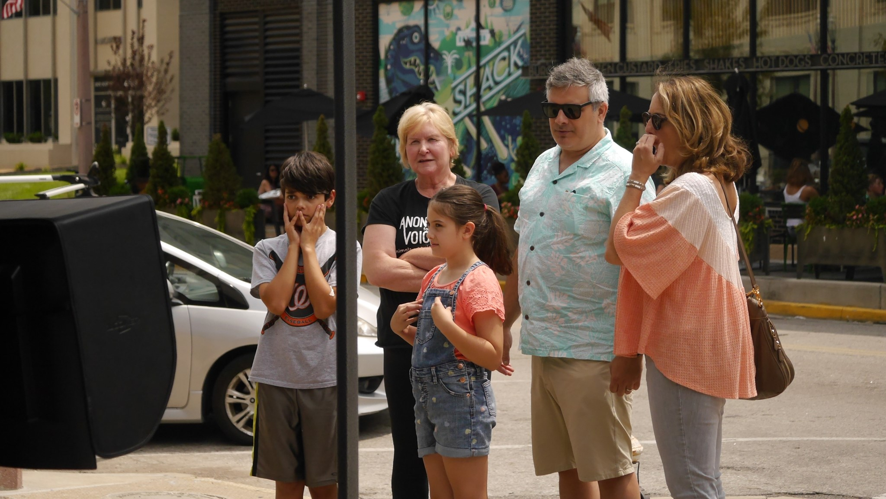
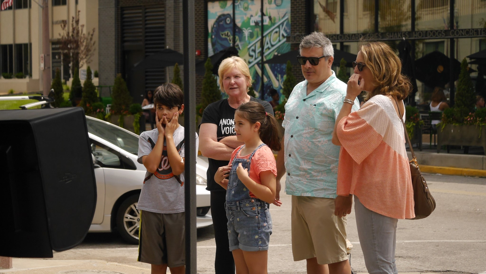

About Us
Anonymous for the Voiceless is an animal rights organization that specializes in non-confrontational street activism.
Through the use of local standard-practice footage, we expose the public to what they are intentionally hidden from when it comes to animal exploitation. Combining this with a value-based sales approach and resource literature, we fully equip the public with everything they need in switching to a vegan lifestyle.
Mission Statement
AV-St. Louis strives to educate the public about the cruelty inherent in the exploitation of animals for our food and other products. We remove our own identities as activists from the spotlight—standing masked, silent, and motionless—so that those who cannot voice their own suffering may “speak” through the footage of their experiences. Then, in using a non-confrontational, non-judgmental outreach approach, we aim to hold up a mirror so that witnesses of this suffering may see their own values of compassion and justice reflected back to them and can better understand how adopting a vegan lifestyle will help align their actions with those values.
Core Values:
AV-St. Louis is about the animals, not our egos. We exist to open others’ eyes to the plight of animals and the vegan way to lessen their suffering—not to police anyone’s vegan status or quarrel about issues that distract from the goal of guiding as many people as possible to veganism.
As a participant in any AV-St. Louis event, you commit to:
- Treat everyone, human or animal, with respect and compassion. Discrimination, bullying, or harassment of any kind toward any member of the public or of AV will not be tolerated.
- Lead and guide others toward a realization of the suffering that animals experience and the vegan solution to that suffering without shaming or attacking them.
Guidelines:
In addition to acting in accordance with the core values above, AV-St. Louis volunteers are also requested to adhere to the following guidelines:
- Wear ALL BLACK clothing (no vegan slogans) to every Cube.
- Be punctual—please arrive 15 minutes before the start of the Cube for a prebriefing.
- Update your attending status on Facebook or message the organizers if something happens and you cannot make it to a Cube or you will arrive late.
- Remember to practice self-care. What we do can be heavy and emotionally-taxing, but know that you don’t have to carry it by yourself. AV-St. Louis members are here to listen and support one another.
***Note that there is no need to bring your own device to AV-St. Louis Cubes as we provide TVs.***
For those in the Cube:
- When you are in the Cube, please stand as still as possible (no fidgeting!).
- Raise your hand if you:
- Need a break.
- See an unattended child watching the footage.
- See someone who has been watching the footage for some time but has not been approached by an outreacher.
For outreachers:
- Note that we advocate for veganism—not vegetarianism, meatless Mondays, etc. However, in order to be effective, we must come across as compassionate and non-judgmental. Acknowledge people’s efforts to reduce their consumption of animals, but show them how veganism is actually the answer.
- Do not approach people who have not stopped to watch the footage.
- Wait until someone has been watching the footage for approximately 30 seconds before you approach them. We want to give people time to process and connect with what they are seeing on their own.
- Avoid confrontation and judgment. It is best to use the first-person plural (“We” statements) rather than accusatory “You” statements.
- Use Socratic-style questioning to guide observers toward a vegan conclusion. (E.g., “Have you seen footage like this before?” “How does it make you feel?” “Why do you think it makes you feel that way?” “Do you think we need to eat animal products to be happy and healthy?”)
- Don’t gang up on people—only one outreacher should speak to an observer or small group of observers at a time. However, if you need to, you may call over another outreacher to take your place in a conversation. Also, if you are new to outreach, you may ask to shadow a more experienced outreacher.
- Please allow others a turn to do outreach.
Further Research:
How to Talk to Non-Vegans by Earthling Ed
30 Days, 30 Excuses by Earthling Ed
AV Outreacher’s Guide by Lachlan Jacques, Matt Stellino & Joshua Entis
Join Us
To get involved, simply submit a request to join our
AV St. Louis Facebook Group. There are three short membership questions which you must fill out to be approved (this helps us cut down on spam and internet trolls).
Once you are a member of the Facebook group, you will be able to see all our upcoming event dates and locations. We look forward to seeing you at a Cube!

 
